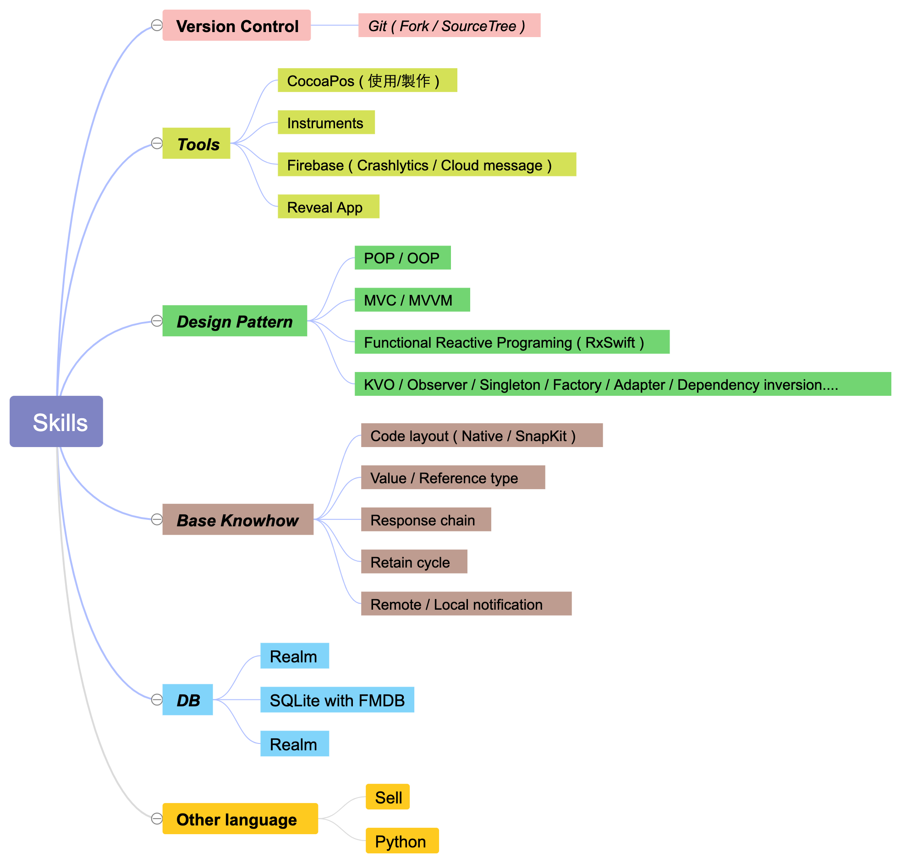

iOS Developer.
Programmers are more than someone who writes codes. We are designers and architectures.
1. 自介2. 技術介紹． OhSwifter． SwiftMinions． CoderEngine． 其他． 技能樹3. 工作經歷． iOS 軟體工程師 ( Team lead ) -- 果思設計 2018/09 ~ 現在 ． iOS 軟體工程師 -- 桓基科技 2017/06 ~ 2018/08 4. 自我進修
有一點程式潔癖；所以喜歡研究架構。有一點懶；所以熱愛自動化。
有一點喜歡造輪子；所以想要徹底搞懂為什麼。有一點愛寫程式；所以寫程式
熱愛學習新的事物，喜歡滑板、音樂、小說、電影。
UI initializer with fluent style.
鏈式 coding style。
相較常見的 var lable: UILable = { //... }() 方式，節省許多不必要的 code。
借鑒 RxSwift 的 .rx.xxx name-spacing :
封裝複數 config property :
Instead of creating a product without reasons and purposes, we built our own framework from a clear starting point.
與朋友一起實作的，仿 SwifterSwift 的 extension library。
使用 Jazzy 製作文件。
Unit test。
Shell script 自動化 release。
套件的幾個特色 :
array.safe[0], "string".safe[0...10] ，😁 這是我最自豪的一個開源專案，或許不是很厲害的架構，但其中許多構想是由我提出並且完成的。
Assets.xcassets parser

待上線 APP ( 2019/09–2020/04 )
目前階段不方便公開，請見諒。
元盛生醫 - 膚質檢測APP ( 2019/02–2020/08 )
IoT 產品，使用儀器測量膚質，APP計算出建議保養品用量，並記錄膚質狀況。
使用 MVVM + RxSwift 開發，純 code layout。
使用 Realm 資料庫，記錄使用者的膚質檢測紀錄。
使用 RxSwift 解決原生藍芽框架中大量的 Delegate，改為事件流的方式處理與儀器的交互。
使用知名圖表套件 Chart，並結合遮罩，讓原本不會動的曲線圖動起來。
客製 UI 元件，使用 UICollectionView 實作可滾動曲線圖，並加上標示點。
勤業眾信 - 企業用APP ( 2018/12 - 2019/4 )
車資＆請假簽核系統，結合員工餐廳的餐點預定。
使用 MVC 開發，純 code layout。
使用 SQLite 紀錄購物車。
介接企業內部原本的車資、請假簽核系統。
企業用通訊軟體 - iCa
通訊軟體，並結合企業入口網中的各個模組。 此專案使用極度少量的第三方套件！
平時滿喜歡聊程式，有定期參加 iOS@Taipei、CocoaHeads 聚會。
2020 年：
2019 年：
曾經相信在程式的世界中「只有想不到，沒有做不到」；如今帶著些微的程式潔癖，遊蕩於 iOS 的領域中。 過去懵懂無知、年少輕狂，留下許多遺憾；現在朝著一出手就是框架等級的架構師前進。